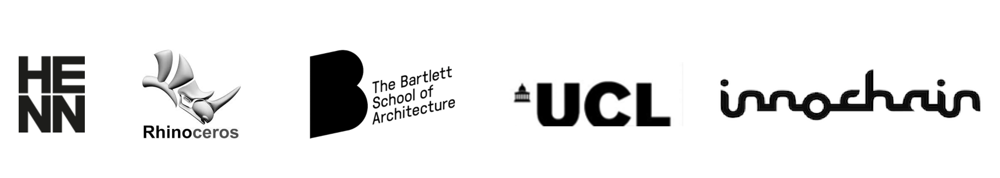

Two and half years in, Speckle's ready for a 1.0.0. A major server-side upgrade: comments, projects & permissions & a simpler and cleaner api.
The Speckle Rhino Plugin installation and usage notes.
Onwards and upwards: where will Speckle go in 2018?
Less than a year: a brief outline of Speckle's journey so far.
The following showcases's one of speckle's ground principles: schema agnosticism.
Speckle's going to be at the CORE TT AEC Symposium 2017!
Queries & filters and a ton of new api methods.
Speckle social architecture: federated & open.
Speckle is growing out of research undertaken at UCL The Bartlett and InnoChain as an ecosystem of software tools that aims to enable enable a flexible data rich design workflow between any stakeholders of any industry, thus allowing for a richer and more productive design environment. Read more.

Get in touch on Slack!
This project has received funding from the European Union’s Horizon 2020 research and innovation program under the Marie Sklodowska-Curie grant agreement No 642877.
Started off by Dimitrie Stefanescu in 2015 while at UCL The Bartlett & InnoChain. All work (c) project contributors, licensed under MIT.